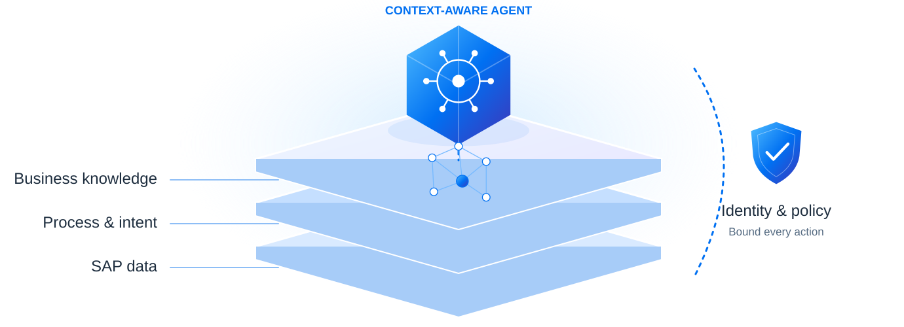

SAP BTP AI
03 · BUSINESS CONTEXT
Business context makes AI ready to act
Connect facts, business meaning and permissions before the agent acts.

Data + process + knowledge + control = context-aware enterprise action.
03 · BUSINESS CONTEXT
Connect facts, business meaning and permissions before the agent acts.

Data + process + knowledge + control = context-aware enterprise action.